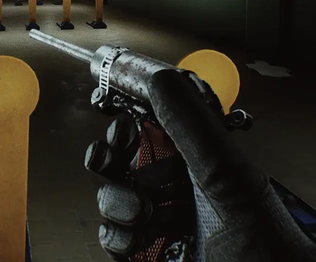
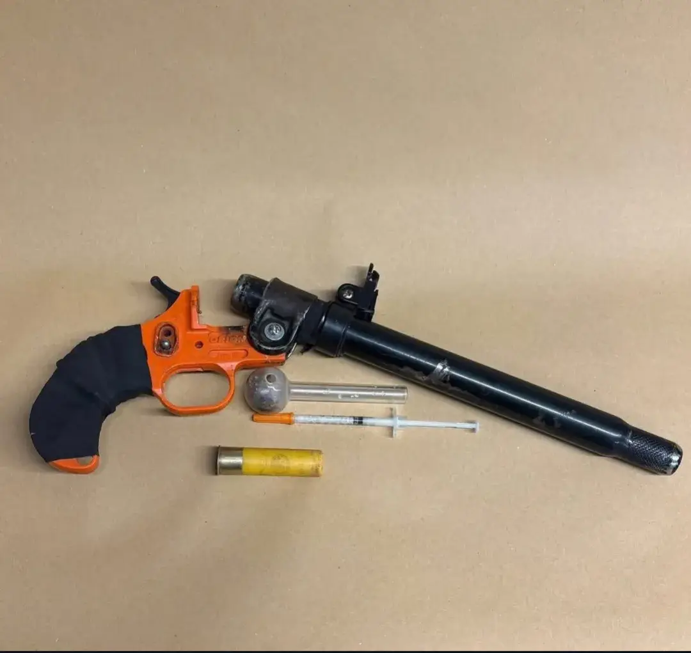
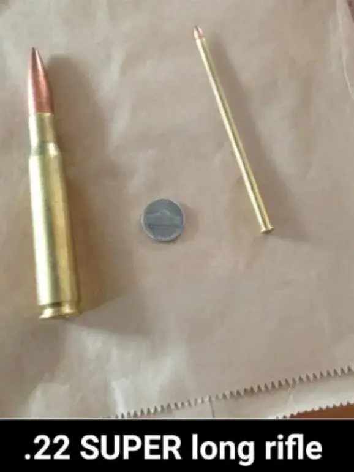
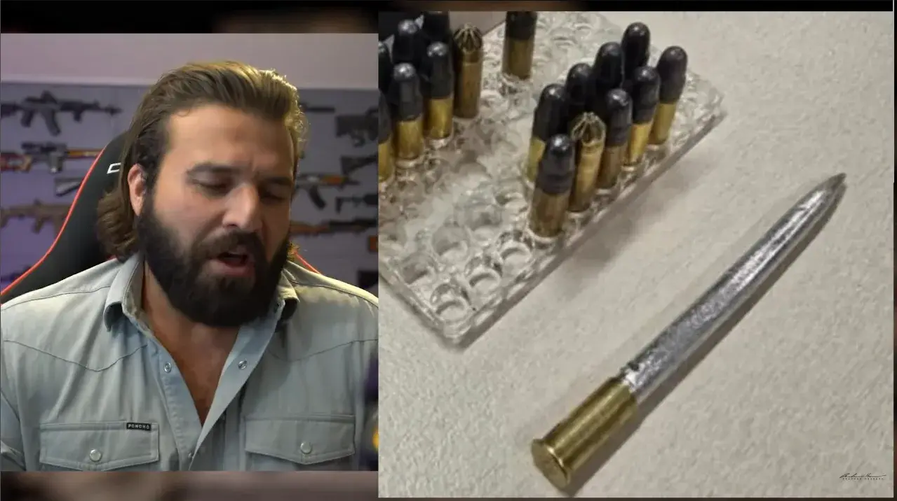

Mod
22 Crackshot
- Downloads
- 700
- Favourites
- 3
- Mod lists
- 9
This mod displayed a profile-binding notice on Forge.
Disclaimer
This mod is not to be taken seriously
22 Crackshot is the wretched mind child of me seeing a drug bust gun that was made from a flare pistol and thinking “that’d be funny in THE CITY”
and now we have this..

The gun and ammunition can be purchased from Skier.
Huge shoutout to EpicRangeTime, GrooveyPengiunX, and Bushtail. This mod would have taken ALOT longer without their generous assistance.
Another thank you to Bobinstein for their .22 models that i used for refs.
Inspiration



I do not remember what video the 22spear is from. image was sent by a friend.Demonstration Video
Version
1.0.0
SPT 4.0.12
Fika: unknown
700 downloads15.2 MB
Mod Release
Dependencies
VirusTotal: report 1